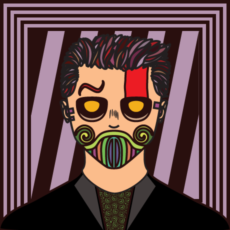

Mitt kompetensområde är inom UX-design och webbutveckling.
Om mig

Vem är jag?
En student 21 årig student som gillar att pyssla med datorer och teknik.Jag är en retrogamer, saxofonist, hundklappare, boknörd, skidåkare men framförallt är jag en designer.Under mina år på Stockholms universitet har jag lärt och använt mängder av designtekniker.